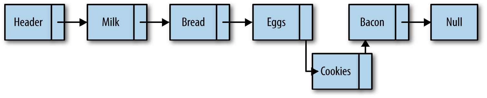

JavaScript Data Structures and Algorithms
Data Structures in JavaScript - Arrays,Lists,Stacks,Queues,Linked Lists, Dictionaries, Hashing, Sets, Binary Trees and Binary Search Trees, Graph and Graph Algorithms,Sorting Algorithms, Searching Algorithms and Advanced Algorithms.
1. Arrays: Array is a linear collection of elements.
Usage:
var numbers = [];
var numbers = [1,2,3,4,5];
console.log(numbers.length); // displays 5
var numbers = new Array();
console.log(numbers.length); // displays 0
var numbers = new Array(1,2,3,4,5);
console.log(numbers.length); // displays 5
var numbers = new Array(10);
console.log(numbers.length); // displays 10
JavaScript array elements do not have to be of the same type:
var objects = [1, "Joe", true, null];
We can verify that an object is an array by calling the Array.isArray() function:
var numbers = 3;
var arr = [7,4,1776];
console.log(Array.isArray(number)); // displays false
console.log(Array.isArray(arr)); // displays true
Creating Arrays from Strings using split() function:
var sentence = "the quick brown fox jumped over the lazy dog";
var words = sentence.split(" ");
for (var i = 0; i < words.length; ++i) {
console.log("word " + i + ": " + words[i]);
}
The output from this program is:
word 0: the
word 1: quick
word 2: brown
word 3: fox
word 4: jumped
word 5: over
word 6: the
word 7: lazy
word 8: dog
When we assign one array to another array, you are assigning a reference to the assigned array. When you make a change to the original array, that change is reflected in the other array as well:This is called a shallow copy.
var nums = [1,2];
var samenums = nums;
nums[0] = 400;
console.log(samenums[0]); // displays 400
A better alternative is to make each of the original array’s elements copied to the new array’s elements:This is called deep copy.
function copy(arr1, arr2) {
for (var i = 0; i < arr1.length; ++i) {
arr2[i]=arr1[i];
}
}
var nums=[ ];
var nums = [1,2];
var samenums=[ ];
copy(nums, samenums);
nums[0]=400;
console.log(samenums[0]); // displays 1
One of the most commonly used accessor functions is indexOf(), which looks to see if the argument passed to the function is found in the array.
var names = ["David", "Cynthia", "Raymond", "Clayton", "Jennifer"];
names.indexOf("Cynthia"); //displays 1
Note:If you have multiple occurrences of the same data in an array, the indexOf() function will always return the position of the first occurrence.
lastIndex Of(), will return the position of the last occurrence of the argument in the array, or -1 if the argument isn’t found.
var names = ["David", "Cynthia", "Raymond", "Clayton", "Cynthia"];
names.lastIndexOf("Cynthia"); //displays 4
There are two functions that return string representations of an array: join() and toString():
var names = ["David", "Cynthia", "Raymond", "Clayton", "Mike", "Jennifer"];
var namestr = names.join();
console.log(namestr); // David,Cynthia,Raymond,Clayton,Mike,Jennifer
namestr = names.toString();
console.log(namestr); // David,Cynthia,Raymond,Clayton,Mike,Jennifer
There are two accessor functions that allow you create new arrays from existing arrays: concat() and splice(). The concat() function allows you to put together two or more arrays to create a new array, and the splice() function allows you to create a new array from a subset of an existing array.
var cisDept = ["Mike", "Clayton", "Terrill", "Danny", "Jennifer"];
var dmpDept = ["Raymond", "Cynthia", "Bryan"];
var itDiv = cisDept.concat(dmpDept);
console.log(itDiv);
var itDiv = ["Mike","Clayton","Terrill","Raymond","Cynthia","Danny","Jennifer"];
var dmpDept = itDiv.splice(3,3);
var cisDept = itDiv;
console.log(dmpDept); // Raymond,Cynthia,Danny
console.log(cisDept); // Mike,Clayton,Terrill,Jennifer
There are two mutator functions for adding elements to an array: push() and un shift().
The push() function adds an element to the end of an array:
var nums = [1,2,3,4,5];
console.log(nums); // 1,2,3,4,5
nums.push(6);
console.log(nums); // 1,2,3,4,5,6
The mutator function for adding array elements to the beginning of an array is un shift().
var nums = [2,3,4,5];
console.log(nums); // 2,3,4,5
var newnum = 1;
nums.unshift(newnum);
console.log(nums); // 1,2,3,4,5
nums = [3,4,5];
nums.unshift(newnum,1,2);
console.log(nums); // 1,1,2,3,4,5
Removing an element from the end of an array is easy using the pop() mutator function:
var nums = [1,2,3,4,5,9];
nums.pop();
console.log(nums); // 1,2,3,4,5
The mutator function we need to remove an element from the beginning of an array is shift().
var nums = [9,1,2,3,4,5];
nums.shift();
console.log
(nums); // 1,2,3,4,5
Note:Both pop() and shift() return the values they remove, so you can collect the values in a variable:
The mutator function we can use to perform add and remove from middle of array operations:splice().
Adding element in middle of array:
To add elements to an array using splice(), you have to provide the following arguments:
• The starting index (where you want to begin adding elements)
• The number of elements to remove (0 when you are adding elements)
• The elements you want to add to the array
var nums = [1,2,3,7,8,9];
var newElements = [4,5,6];
nums.splice(3,0,newElements);
console.log(nums); // 1,2,3,4,5,6,7,8,9
var nums = [1,2,3,7,8,9];
nums.splice(3,0,4,5,6);
console.log(nums);
Using splice() to remove elements from an array:
var nums = [1,2,3,100,200,300,400,4,5];
nums.splice(3,4);
console.log(nums); // 1,2,3,4,5
Reverses the order of the elements of an array:
var nums = [1,2,3,4,5];
nums.reverse();
console.log(nums); // 5,4,3,2,1
The mutator function for sorting task, sort(),
var names = ["David","Mike","Cynthia","Clayton","Bryan","Raymond"];
names.sort();
console.log(names); // Bryan,Clayton,Cynthia,David,Mike,Raymondc
Non–Array-Generating Iterator Functions:
forEach():This function takes a function as an argument and applies the called function to each element of an array.
function square(num) {
console.log(num, num * num);
}
var nums = [1,2,3,4,5,6,7,8,9,10];
nums.forEach(square);
every():applies a Boolean function to an array and returns true if the function can return true for every element in the array
function isEven(num) {
return num % 2 == 0;
}
var nums = [2,4,6,8,10];
var even = nums.every(isEven);
if (even) {
console.log("all numbers are even");
}
else {
console.log("not all numbers are even");
}
some():This function will take a Boolean function and return true if at least one of the elements in the array meets the criterion of the Boolean function
function isEven(num) {
return num % 2 == 0;
}
var nums = [1,2,3,4,5,6,7,8,9,10];
var someEven = nums.some(isEven);
if (someEven) {
console.log("some numbers are even");
}
else {
console.log("no numbers are even");
}
nums = [1,3,5,7,9];
someEven = nums.some(isEven);
if (someEven) {
console.log("some numbers are even");
}
else {
console.log("no numbers are even");
}
reduce():This function applies a function to an accumulator and the successive elements of an array until the end of the array is reached, yielding a single value.
function add(runningTotal, currentValue) {
return runningTotal + currentValue;
}
var nums = [1,2,3,4,5,6,7,8,9,10];
var sum = nums.reduce(add);
console.log(sum); // displays 55
Note:We can also use reduce() with strings to perform concatenation.
Iterator Functions That Return a New Array
map(): This funtion returns a new array with the results of the function application.
function curve(grade) {
return grade += 5;
}
var grades = [77, 65, 81, 92, 83];
var newgrades = grades.map(curve);
console.log
(newgrades); // 82, 70, 86, 97, 88
function first(word) {
return word[0];
}
var words = ["for","your","information"];
var acronym = words.map(first);
console.log(acronym.join("")); // displays "fyi"
filter():The filter() function works similarly to every(), but instead of returning true if all the elements of an array satisfy a Boolean function, the function returns a new array consisting of those elements that satisfy the Boolean function.
function isEven(num) {
return num % 2 == 0;
}
function isOdd(num) {
return num % 2 != 0;
}
var nums = [1,2,3,4,5,6,7,8,9,10];
var evens = nums.filter(isEven);
console.log("Even numbers: ");
console.log(evens);//[2, 4, 6, 8, 10]
var odds = nums.filter(isOdd);
console.log("Odd numbers: ");
console.log(odds);//[1, 3, 5, 7, 9]
-------------------------------------
function afterc(str) {
if (str.indexOf("cie") > -1) {
return true;
}
return false;
}
var words = ["recieve","deceive","percieve","deceit","concieve"];
var misspelled = words.filter(afterc);
console.log(misspelled); // displays recieve,percieve,concieve
Creating Two-Dimensional Arrays
Array.matrix = function(numrows, numcols, initial) {
var arr = [];
for (var i = 0; i < numrows; ++i) {
var columns = [];
for (var j = 0; j < numcols; ++j) {
columns[j] = initial;
}
arr[i] = columns;
}
return arr;
}
------------------
var nums = Array.matrix(5,5,0);
console.log(nums[1][1]); // displays 0
var names = Array.matrix(3,3,"");
names[1][2] = "Joe";
console.log(names[1][2]); // display "Joe"
-----------------
var grades = [[89, 77, 78],[76, 82, 81],[91, 94, 89]];
console.log(grades[2][2]); // displays 89
Jagged Arrays:A jagged array is an array where the rows in the array may have a different number of elements.
var grades = [[89, 77],[76, 82, 81],[91, 94, 89, 99]];
var total = 0;
var average = 0.0;
for (var row = 0; row < grades.length; ++row) {
for (var col = 0; col < grades[row].length; ++col) {
total += grades[row][col];
}
average = total / grades[row].length;
console.log("Student " + parseInt(row+1) + " average: " +average.toFixed(2));
total = 0;
average = 0.0;
}
/*
Student 1 average: 83.00
Student 2 average: 79.67
Student 3 average: 93.25
*/
2. Lists: A list is an ordered sequence of data. Each data item stored in a list is called an element.
• A list with no elements is an empty list.
• The number of elements stored in a list is called the length of the list.Internally, the number of elements in a list is kept in a listSize variable.
• We can append an element to the end of a list, or you can insert an element into a list after an existing element or at the beginning of a list.
• Elements are deleted from a list using a remove operation.
• We can also clear a list so that all of its current elements are removed.
Complete List ADT:
listSize (property)
Number of elements in list
pos (property)
Current position in list
length (property)
Returns the number of elements in list
clear (function)
Clears all elements from list
toString (function)
Returns string representation of list
getElement (function)
Returns element at current position
insert (function)
Inserts new element after existing element
append (function)
Adds new element to end of list
remove (function)
Removes element from list
front (function)
Sets current position to first element of list
end (function)
Sets current position to last element of list
prev (function)
Moves current position back one element
next (function)
Moves current position forward one element
currPos (function)
Returns the current position in list
moveTo (function)
Moves the current position to specified position
A List Class Implementation
function List()
{
this.listSize = 0;
this.pos = 0;
this.dataStore = []; // initializes an empty array to store list elements
this.clear = clear;
this.find = find;
this.toString = toString;
this.insert = insert;
this.append = append;
this.remove = remove;
this.front = front;
this.end = end;
this.prev = prev;
this.next = next;
this.length = length;
this.currPos = currPos;
this.moveTo = moveTo;
this.getElement = getElement;
this.length = length;
this.contains = contains;
}
Append: Adding an Element to a List
function append(element) {
this.dataStore[this.listSize++] = element;
}
Find: Finding an Element in a List
function find(element)
{
for (var i = 0; i < this.dataStore.length; ++i) {
if (this.dataStore[i] == element) {
return i;
}
}
return -1;
}
Remove: Removing an Element from a List
function remove(element)
{
var foundAt = this.find(element);
if (foundAt > -1) {
this.dataStore.splice(foundAt,1);
--this.listSize;
return true;
}
return false;
}
Length: Determining the Number of Elements in a List
function length()
{
return this.listSize;
}
toString: Retrieving a List’s Elements
function toString()
{
return this.dataStore;
}
Insert: Inserting an Element into a List
function insert(element, after)
{
var insertPos = this.find(after);
if (insertPos > -1) {
this.dataStore.splice(insertPos+1, 0, element);
++this.listSize;
return true;
}
return false;
}
Clear: Removing All Elements from a List
function clear()
{
delete this.dataStore;
this.dataStore = [];
this.listSize = this.pos = 0;
}
Contains: Determining if a Given Value Is in a List
function contains(element)
{
for (var i = 0; i < this.dataStore.length; ++i) {
if (this.dataStore[i] == element) {
return true;
}
}
return false;
}
Traversing a List
function front()
{
this.pos = 0;
}
function end() {
this.pos = this.listSize-1;
}
function prev()
{
if (this.pos > 0) {
--this.pos;
}
}
function next()
{
if (this.pos < this.listSize-1) {
++this.pos;
}
}
function currPos()
{
return this.pos;
}
function moveTo(position)
{
this.pos = position;
}
function getElement()
{
return this.dataStore[this.pos];
}
Iterating Through a List
for(names.front(); names.currPos() < names.length(); names.next())
{
console.log(names.getElement());
}
----------------
//We can also traverse a list backward using an iterator.
for(names.end(); names.currPos() >= 0; names.prev())
{
console.log(names.getElement());
}
3. Stack: A stack is a list of elements that are accessible only from one end of the list, which is called the top.
• The stack is known as a last-in, first-out (LIFO) data structure.
A Stack Implementation
function Stack()
{
this.dataStore = [];
this.top = 0;
this.push = push;
this.pop = pop;
this.peek = peek;
this.length = length;
this.clear = clear;
}
//push(): push a new element onto a stack
function push(element)
{
this.dataStore[this.top++] = element;
}
//pop(): returns the element in the top position of the stack and then decrements the top variable
function pop()
{
return this.dataStore[--this.top];
}
//peek(): returns the top element of the stack
function peek()
{
return this.dataStore[this.top-1];
}
//lenght(): returns length of the stack
function length()
{
return this.top;
}
//clear() : clear a stack
function clear()
{
this.top = 0;
}
Testing the Stack class implementation
var s = new Stack();
s.push("David");
s.push("Raymond");
s.push("Bryan");
console.log("length: " + s.length());
console.log(s.peek());
var popped = s.pop();
console.log("The popped element is: " + popped);
console.log(s.peek());
s.push("Cynthia");
console.log(s.peek());
s.clear();
console.log("length: " + s.length());
console.log(s.peek());
s.push("Clayton");
console.log(s.peek());
4. Queue: A queue is a type of list where data are inserted at the end and are removed from the front.
• A queue is an example of a first-in, first-out (FIFO) data structure.
• The two primary operations involving queues are inserting a new element into a queue and removing an element from a queue.
• The insertion operation is called enqueue, and the removal operation is called dequeue.
• The enqueue operation inserts a new element at the end of a queue, and the dequeue operation removes an element from the front of a queue.
• The peek operation returns the element stored at the front of a queue without removing it from the queue.
• The length operation returns the length of the queue.
• The clear operation removes all elements from the queue.

An Array-Based Queue Class Implementation
function Queue()
{
this.dataStore = [];
this.enqueue = enqueue;
this.dequeue = dequeue;
this.front = front;
this.back = back;
this.toString = toString;
this.empty = empty;
}
function enqueue(element)
{
this.dataStore.push(element);
}
function dequeue()
{
return this.dataStore.shift();
}
function front()
{
return this.dataStore[0];
}
function back()
{
return this.dataStore[this.dataStore.length-1];
}
function toString()
{
var retStr = "";
for (var i = 0; i < this.dataStore.length; ++i) {
retStr += this.dataStore[i] + "\n";
}
return retStr;
}
function empty()
{
if (this.dataStore.length == 0)
{
return true;
}
else {
return false;
}
}
Example of queue implementation
var q = new Queue();
q.enqueue("Meredith");
q.enqueue("Cynthia");
q.enqueue("Jennifer");
console.log(q.toString());
q.dequeue();
console.log(q.toString());
console.log("Front of queue: " + q.front());
console.log("Back of queue: " + q.back());
5. Linked list: A linked list is a collection of objects called nodes. Each node is linked to a successor node in the list using an object reference. The reference to another node is called a link.
• End of a linked list marked by pointing to a null node.
• Many linked-list implementations include a special node, called the head, to denote the beginning of a linked list.
Note:the operations performed on an array are too slow for practical use, you can consider using the linked list as an alternative data structure. The linked list can be used in almost every situation where a one-dimensional array is used, except when you need random access to the elements of a list. When random access is required, an array is the better data structure to use.
Linked List
Linked List with header
Adding element to linked list
Removing element from linked List
An Object-Based Linked List Design:
function Node(element)
{
this.element = element;
this.next = null;
}
function LList()
{
this.head = new Node("head");
this.find = find;
this.insert = insert;
this.remove = remove;
this.findPrevious = findPrevious;
this.display = display;
}
function find(item)
{
var currNode = this.head;
while (currNode.element != item) {
currNode = currNode.next;
}
return currNode;
}
function insert(newElement, item)
{
var newNode = new Node(newElement);
var current = this.find(item);
newNode.next = current.next;
current.next = newNode;
}
function display()
{
var currNode = this.head;
while (!(currNode.next == null)) {
console.log(currNode.next.element);
currNode = currNode.next;
}
}
function findPrevious(item)
{
var currNode = this.head;
while (!(currNode.next == null) && (currNode.next.element != item)) {
currNode = currNode.next;
}
return currNode;
}
function remove(item)
{
var prevNode = this.findPrevious(item);
if (!(prevNode.next == null)) {
prevNode.next = prevNode.next.next;
}
}
Example for Linked List Operations
var cities = new LList();
cities.insert("Conway", "head");
cities.insert("Russellville", "Conway");
cities.insert("Carlisle", "Russellville");
cities.insert("Alma", "Carlisle");
cities.display();
console.log();
cities.remove("Carlisle");
cities.display();
Doubly Linked Lists
Although traversing a linked list from the first node to the last node is straightforward, it is not as easy to traverse a linked list backward. We can simplify this procedure if we add a property to our Node class that stores a link to the previous node.doubly linked list will do this.
function Node(element)
{
this.element = element;
this.next = null;
this.previous = null;
}
function LList()
{
this.head = new Node("head");
this.find = find;
this.insert = insert;
this.display = display;
this.remove = remove;
this.findLast = findLast;
this.dispReverse = dispReverse;
}
function dispReverse()
{
var currNode = this.head;
currNode = this.findLast();
while (!(currNode.previous == null)) {
console.log(currNode.element);
currNode = currNode.previous;
}
}
function findLast()
{
var currNode = this.head;
while (!(currNode.next == null)) {
currNode = currNode.next;
}
return currNode;
}
function remove(item)
{
var currNode = this.find(item);
if (!(currNode.next == null)) {
currNode.previous.next = currNode.next;
currNode.next.previous = currNode.previous;
currNode.next = null;
currNode.previous = null;
}
}
function display()
{
var currNode = this.head;
while (!(currNode.next == null)) {
console.log(currNode.next.element);
currNode = currNode.next;
}
}
function find(item)
{
var currNode = this.head;
while (currNode.element != item) {
currNode = currNode.next;
}
return currNode;
}
function insert(newElement, item)
{
var newNode = new Node(newElement);
var current = this.find(item);
newNode.next = current.next;
newNode.previous = current;
current.next = newNode;
}
Example of double linked list
var cities = new LList();
cities.insert("Conway", "head");
cities.insert("Russellville", "Conway");
cities.insert("Carlisle", "Russellville");
cities.insert("Alma", "Carlisle");
cities.display();
console.log();
cities.remove("Carlisle");
cities.display();
console.log();
cities.dispReverse();
Circularly Linked Lists
A circularly linked list is similar to a singly linked list and has the same type of nodes. The only difference is that a circularly linked list, when created, has its head node’s next property point back to itself. This means that the assignment is propagated throughout the circularly linked list so that every new node has its next property pointing to the head of the list. In other words, the last node of the list is always pointing back to the head of the list, creating a circular list.
function Node(element)
{
this.element = element;
this.next = null;
}
function LList()
{
this.head = new Node("head");
this.head.next = this.head;
this.find = find;
this.insert = insert;
this.remove = remove;
this.findPrevious = findPrevious;
this.display = display;
}
function find(item)
{
var currNode = this.head;
while (currNode.element != item) {
currNode = currNode.next;
}
return currNode;
}
function insert(newElement, item)
{
var newNode = new Node(newElement);
var current = this.find(item);
newNode.next = current.next;
current.next = newNode;
}
function display()
{
var currNode = this.head;
while (!(currNode.next == null) &&!(currNode.next.element == "head")) {
console.log(currNode.next.element);
currNode = currNode.next;
}
}
function findPrevious(item)
{
var currNode = this.head;
while (!(currNode.next == null) && (currNode.next.element != item)) {
currNode = currNode.next;
}
return currNode;
}
function remove(item)
{
var prevNode = this.findPrevious(item);
if (!(prevNode.next == null)) {
prevNode.next = prevNode.next.next;
}
}
6. Dictionaries: A dictionary is a data structure that stores data as key-value pairs.
• The JavaScript Object class is designed to operate as a dictionary.
7. Hashing: Hashing is a common technique for storing data in such a way that the data can be inserted and retrieved very quickly. Hashing uses a data structure called a hash table.
• The JavaScript Object class is designed to operate as a dictionary.
• Although hash tables provide fast insertion, deletion, and retrieval, they perform poorly for operations that involve searching, such as finding the minimum and maximum values in a data set. For these operations, other data structures such as the binary search tree are more appropriate.
8. Sets: A set is a collection of unique elements. The elements of a set are called members. The two most important properties of sets are that the members of a set are unordered and that no member can occur in a set more than once.
9. Binary Trees: Binary tree is one where each node can have no more than two children. By limiting the number of children to two, we can write efficient programs for inserting data, searching for data, and deleting data in a tree.
• A tree is a nonlinear data structure that is used to store data in a hierarchical manner. Tree data structures are used to store hierarchical data, such as the files in a file system, and for storing sorted lists of data.
• A tree is made up of a set of nodes connected by edges.
• Binary trees are chosen over other more primary data structures because you can search a binary tree very quickly (as opposed to a linked list, for example) and you can quickly insert and delete data from a binary tree (as opposed to an array).
10. Graphs: A graph consists of a set of vertices and a set of edges.
• Edges are defined as a pair (v1, v2), where v1 and v2 are two vertices in a graph.
• A vertex can also have a weight, which is sometimes called a cost.
• A vertex can also have a weight, which is sometimes called a cost.
• A graph whose pairs are ordered is called a directed graph, or just a digraph. When pairs are ordered in a directed graph, an arrow is drawn from one pair to another pair. Directed graphs indicate the flow direction from vertex to vertex.
11. Sorting: Sorting is used rearrange list of data into specific order
8. Searching: Finding one or more elements from specified list of elements is termed as searching.
• There are two ways to search for data in a list: sequential search and binary search.
• A sequential search is used when the items in a list are in random order
• A binary search is used when the items in a list are in sorted order.
• Binary search is the more efficient algorithm, but you also have to take into account the extra time it takes to sort the data set before being able to search it for a value.
12. Advanced Algorithms:
• Dynamic programming is a technique that is sometimes considered the opposite of recursion.
• Where a recursive solution starts at the top and breaks the problem down, solving all small problems until the complete problem is solved.
• A dynamic programming solution starts at the bottom, solving small problems and combining them to form an overall solution to the big problem.